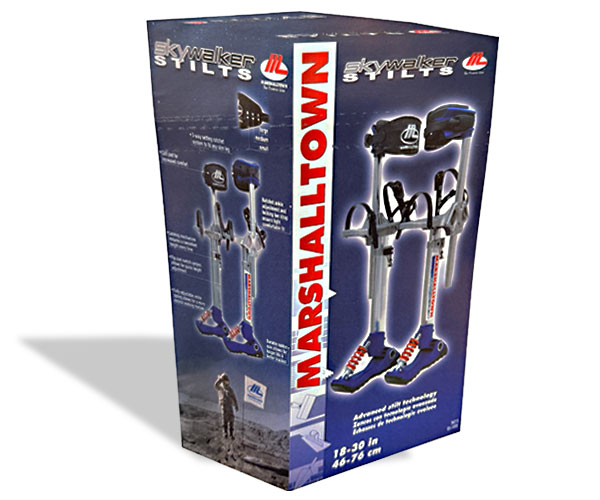
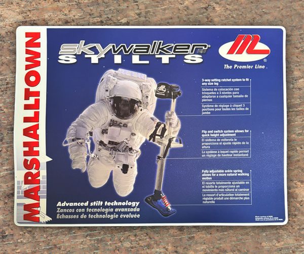
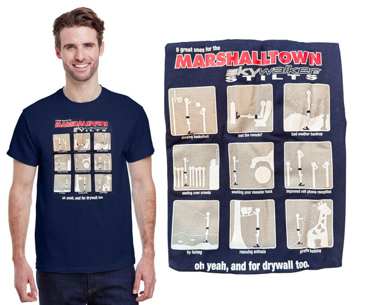
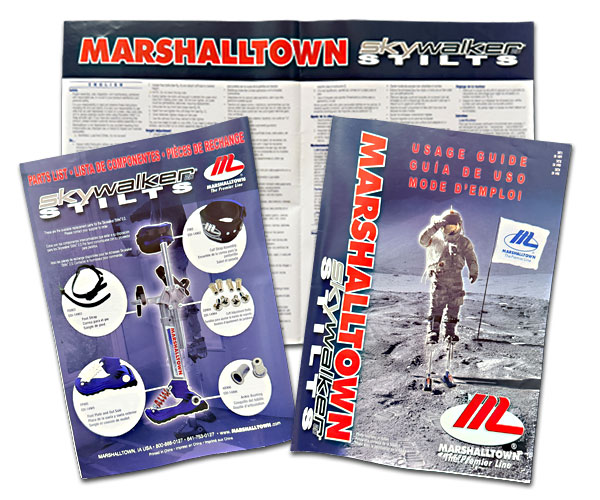
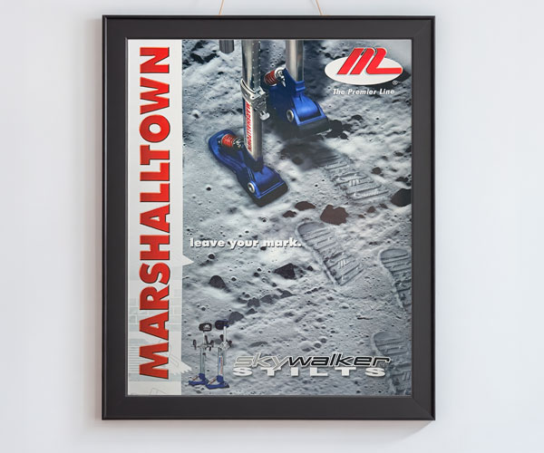

<section id="skywalkerContainer">
  <div class="row">
    <div class="column_half left_half"> 
      
      <!-- The Target Display Container -->
      <div class="targetContainer" style="margin-top: 15px; padding: 10px; border-radius: 8px;"> 
        
        <!-- Image Element (Hidden by default) --> 
         
        
        <!-- Video Element (Hidden by default) -->
        <video class="targetVideo" controls style="display: none; max-width: 100%; height: auto; max-height: 400px; border-radius: 4px; margin: auto;"> Your browser does not support the video tag. </video>
        
        <!-- The Buttons (Use your local relative file paths here) -->
        <div class="row text-center">
          <button onclick="displayMedia('_images/graphic-swbox.jpg', this)"></button>
          <button onclick="displayMedia('_images/graphic-swcountermat.jpg', this)"></button>
          <button onclick="displayMedia('_images/graphic-swshirt.jpg', this)"></button>
          <button onclick="displayMedia('_images/graphic-swusageguide.jpg', this)"></button>
          <button onclick="displayMedia('_images/graphic-swposter.jpg', this)"></button>
        </div>
      </div>
    </div>
    <div class="column_half right_half">
      <h2>Skywalker Stilts 2.0</h2>
      <p class="text-center"> <span class="badge">Packaging</span> <span class="badge">Graphic design</span> <span class="badge">Photography</span> <span class="badge">Branding&nbsp;</span></p>
      <p>A new product launch that's out of this world demands branding that matches it. The Skywalker Stilts 2.0 was an innovation exclusively to Marshalltown. I was tasked with bringing them to life in a fun way that drew attention to how unique they were. This launch included a box design, a counter mat, a t-shirt, a usage guide, and a poster.</p>
    </div>
  </div>
</section>
